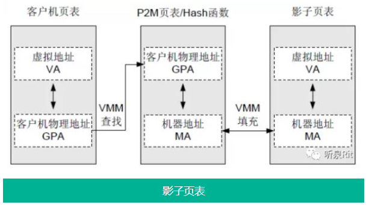

01 虚拟化概念
date()
false()
01 虚拟化概念()
1. 虚拟化架构类型()
全虚拟架构
操作系统层虚拟化架构

- 依靠对 Guest OS 的修改实现，Virtualization Layer 提供给 Guest OS 的调用接口，使虚拟机可以直接调用底层硬件，代表技术为 Xen
注: 虚拟机系统内核要求与宿主机保持一致，e.g. Host OS 为 Ubuntu, Host OS(1) 可以为 Ubuntu 或 Cent OS
平台(硬件)虚拟化架构

- 借助硬件平台（主要是指 CPU）的支持来提供高效的全虚拟化
- Guest OS 和 VMM 的执行环境被隔离开，Guest OS 有了自己的“全套寄存器”，可以直接运行在最高级别
- Guest OS 需要执行特权指令，直接从自己的“寄存器”中获取执行指令即可
注: 主要用于服务器，代表技术为 KVM
2. 内存虚拟化
内存全虚拟化

- Guest OS 相当于物理机上的应用，创建时分配了固定长度的内存，即 GPA
- Guest OS 上的应用程序跑在连续的虚拟内存上，虚拟内存由 MMU 单元负责映射到 GPA 上
- GPA 本身也是 Guest OS 的虚拟内存，需要通过 VMM 映射到物理机内存 MA
- 影子页表 ： 直接记录下 VA 与 MA 的映射关系，让两层映射降为一层
内存半虚拟化技术
- Guest OS 中的 MMU 自身不具备写内存页表的权限，而是把写权限交给 VMM 来维护
- 当 Guest OS 需要更新或添加页表映射关系时，把写请求交给 VMM
- VMM 检查写请求，并通过查找自身所维护的关系表，将写请求中的物理地址替换为真正的物理地址
- 最后再把修改过的映射关系（即 VA –> MA）页表载入到虚拟机的 MMU 中
- 这样虚拟机通过 MMU 中维护的页表对应关系就可以直接访问到底层的硬件资源
内存硬件辅助虚拟化
- 内存硬件辅助虚拟化其实是影子页表的替代者，因为它把影子页表中依靠软件实现的改为硬件实现，所以性能几乎接近裸机
- EPT技术 ：硬件处理客户机物理地址与机器地址的映射关系
- TLB技术 ：转换寻址缓冲区，帮助缓存CPU中的MMU进行地址转换的结果，方便下次相同线性地址直接通过 TLB 中的缓存结果而得到物理地址，省去了查表的过程
- VPID技术 ：虚拟处理器标识，在硬件上为每个TLB项增加一个标识，从而能够区分开不同虚拟处理器的 TLB
1 | 查看服务器上 CPU 对 ETP 与 VPID 的支持情况 |